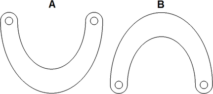
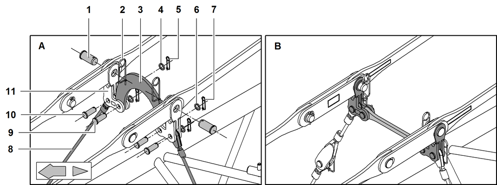

Zwischenabspannung einbauen
Die Längen der Abspannseile und deren Einbaupositionen sind in den systemrelevanten Angaben des Auslegers angeführt.

GEFAHR
Falscher Einbau der Zwischenabspannungen!
Versagen der Struktur.
Zwischenabspannungen laut systemrelevanten Angaben einbauen. |
Benötigte Länge der Abspannseile laut systemrelevanten Angaben zusammenstellen. |
Sicherungsfedern und Scheiben beidseitig von Doppelkonusbolzen der Auslegerverbolzung entfernen und verräumen. |
Vorgang auf gegenüberliegender Seite wiederholen. |
Oberes Abspannseil 2 mit unterem Abspannseil 5 verbolzen. |
Bolzen 1 mit Scheibe 3 und Sicherungsfeder 4 sichern. |
Die Gabeln können verschiedene Formen besitzen. Die jeweils zulässige Form hängt von der Auslegerkonfiguration ab (Weitere Informationen siehe: „Produktbeschreibung“).
Inneren Teil der Gabel 1 auf Doppelkonusbolzen aufsetzen. |
Äußeren Teil der Gabel 4 auf Doppelkonusbolzen aufsetzen. |
Inneren Teil der Gabel 1 mit äußerem Teil der Gabel 4 verbolzen. |
Bolzen 5 mit Scheibe 2 und Klappstecker 3 sichern. |
Vorgang auf gegenüberliegender Seite wiederholen. |

Fig. 5534: Einbauposition des Distanzknochens bei Zwischenabspannung am verstellbaren Nadelausleger 2316 und 1916
Der Distanzknochen 6 der Zwischenabspannung am verstellbaren Nadelausleger 2316 und 1916 in Einbauposition Distanzknochen B nach oben einbauen.

Fig. 5535: Haltestangen, Distanzknochen, Verbindungselemente und Abspannseile der Zwischenabspannung montieren
Fig. 5535: Haltestangen, Distanzknochen, Verbindungselemente und Abspannseile der Zwischenabspannung montieren
Bolzen (2x) für Haltestangen | |
Sicherungsfeder (2x) | |
Distanzknochen | |
Scheibe (2x) | |
Sicherungsfeder (2x) | |
Scheibe (2x) | |
Sicherungsfeder (2x) | |
Abspannseile | |
Bolzen (2x) für Distanzknochen | |
Bolzen (2x) für Abspannseile | |
Verbindungselement (2x) | |
Zwischenabspannung am verstellbaren Nadelausleger 2316 und 1916 | |
Zwischenabspannung am verstellbaren Nadelausleger 1713, 1309 und 1008 |
Die Montage der Zwischenabspannung am verstellbaren Nadelausleger 2316, 1916, 1713, 1309 und 1008 ist identisch. Lediglich die Distanzknochen sind unterschiedlich.
Verbindungselemente 11 mit Haltestangen verbolzen. |
Bolzen 1 mit Sicherungsfedern 2 sichern. |
ACHTUNG
Unzulässiger Verlauf des Seils der Winde1/Winde2 am verstellbaren Nadelausleger 2316 und 1916!
Beschädigung des Seils der Winde1/Winde2.
Sicherstellen, dass Seil der Winde1/Winde2 unter dem Distanzknochen 3 verläuft. |
Verbindungselemente 11 mit Distanzknochen 3 verbolzen. |
Bolzen 9 mit Scheiben 6 und Sicherungsfedern 7 sichern. |
Verbindungselemente 11 mit Abspannseilen 8 verbolzen. |
Bolzen 10 mit Scheiben 4 und Sicherungsfedern 5 sichern. |

Hinweis
Verbolzen von Abspannseilen 2 und Gabel 3 erleichtern: Haltestangen mit A-Bock1 anheben. |
Abspannseil 2 mit Gabel 3 verbolzen. |
Bolzen 1 mit Scheibe 4 und Sicherungsfeder 5 sichern. |
Vorgang auf gegenüberliegender Seite wiederholen. |